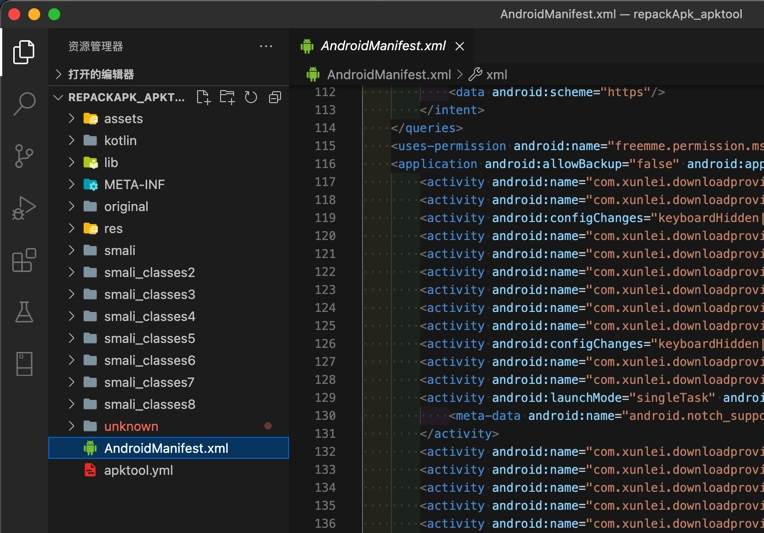
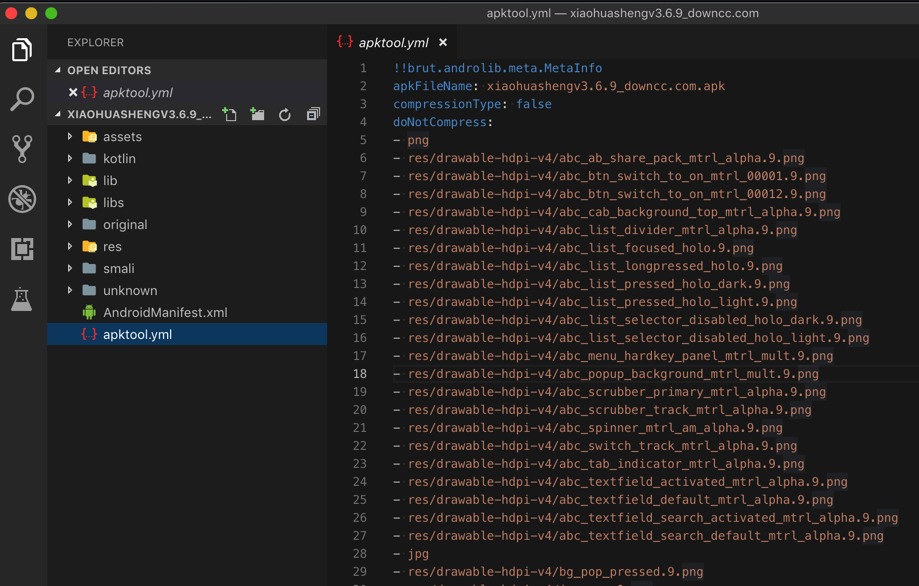
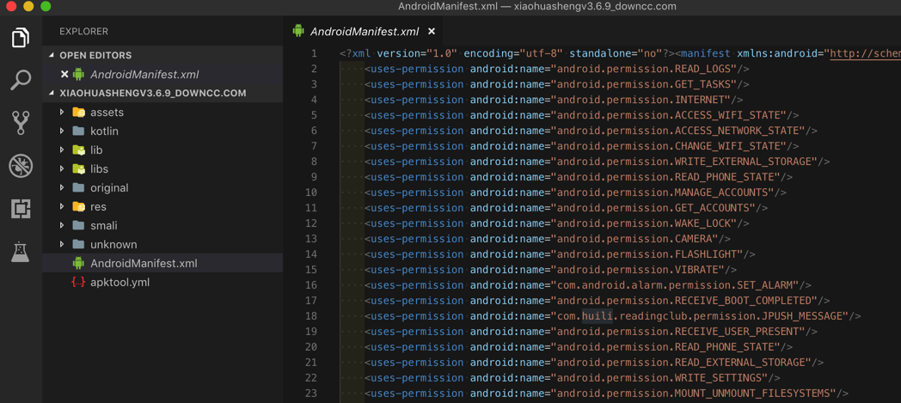
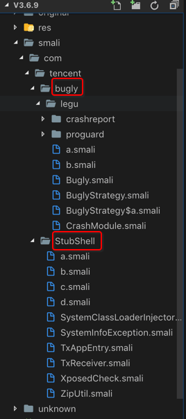
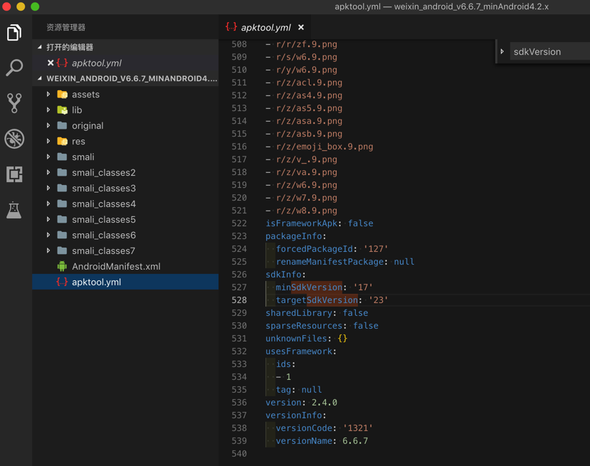
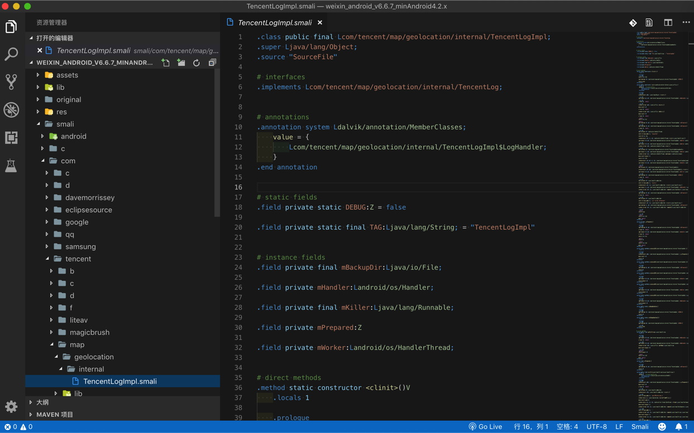

apktool
- 命令
apktool d apk_file.apk- 参数说明
d=decode=解码- =
破解=反编译=解包
- =
- 参数说明
举例
apktool解包迅雷的apk
../../../../reverse_engineering/apktool/apktool d ../../../Thunder/OfficialSite_MobileThunder2.apk -f --only-main-classes -o .
- 输出：反编译后的目录，包含各种文件
详细log：
../../../../reverse_engineering/apktool/apktool d ../../../Thunder/OfficialSite_MobileThunder2.apk -f --only-main-classes -o .
I: Using Apktool 2.5.0 on OfficialSite_MobileThunder2.apk
I: Loading resource table...
I: Decoding AndroidManifest.xml with resources...
I: Loading resource table from file: /Users/crifan/Library/apktool/framework/1.apk
I: Regular manifest package...
I: Decoding file-resources...
I: Decoding values */* XMLs...
I: Baksmaling classes.dex...
I: Baksmaling classes2.dex...
I: Baksmaling classes3.dex...
I: Baksmaling classes4.dex...
I: Baksmaling classes5.dex...
I: Baksmaling classes6.dex...
I: Baksmaling classes7.dex...
I: Baksmaling classes8.dex...
I: Copying raw assets/39285EFA.dex file...
I: Copying assets and libs...
I: Copying unknown files...
I: Copying original files...
I: Copying META-INF/services directory

apktool反编译小花生的apk
➜ apk ll
total 51280
-rw-r--r--@ 1 crifan staff 25M 3 14 09:00 xiaohuashengv3.6.9_downcc.com.apk
➜ apk apktool d xiaohuashengv3.6.9_downcc.com.apk
I: Using Apktool 2.4.0 on xiaohuashengv3.6.9_downcc.com.apk
I: Loading resource table...
I: Decoding AndroidManifest.xml with resources...
S: WARNING: Could not write to (/Users/crifan/Library/apktool/framework), using /var/folders/46/2hjxz38n22n3ypp_5f6_p__00000gn/T/ instead...
S: Please be aware this is a volatile directory and frameworks could go missing, please utilize --frame-path if the default storage directory is unavailable
I: Loading resource table from file: /var/folders/46/2hjxz38n22n3ypp_5f6_p__00000gn/T/1.apk
I: Regular manifest package...
I: Decoding file-resources...
I: Decoding values */* XMLs...
I: Baksmaling classes.dex...
I: Copying assets and libs...
I: Copying unknown files...
I: Copying original files...
➜ apk ll
total 51280
drwxr-xr-x 12 crifan staff 384B 3 14 13:39 xiaohuashengv3.6.9_downcc.com
-rw-r--r--@ 1 crifan staff 25M 3 14 09:00 xiaohuashengv3.6.9_downcc.com.apk
➜ apk cd xiaohuashengv3.6.9_downcc.com
➜ xiaohuashengv3.6.9_downcc.com ll
total 160
-rw-r--r-- 1 crifan staff 63K 3 14 13:39 AndroidManifest.xml
-rw-r--r-- 1 crifan staff 14K 3 14 13:39 apktool.yml
drwxr-xr-x 10 crifan staff 320B 3 14 13:39 assets
drwxr-xr-x 8 crifan staff 256B 3 14 13:39 kotlin
drwxr-xr-x 9 crifan staff 288B 3 14 13:39 lib
drwxr-xr-x 3 crifan staff 96B 3 14 13:39 libs
drwxr-xr-x 4 crifan staff 128B 3 14 13:39 original
drwxr-xr-x 143 crifan staff 4.5K 3 14 13:39 res
drwxr-xr-x 3 crifan staff 96B 3 14 13:39 smali
drwxr-xr-x 10 crifan staff 320B 3 14 13:39 unknown
得到项目的目录文件：

其中有：
- 最基本的：
AndroidMenifest.xml- 
- 但得不到我们要的
dex文件 - 可得到：和app业务逻辑相关代码的
smali文件- 想要得到最终
java源码的话- 需要再去找
smali转java的工具才可以 - 此处即使不去转换得到java源码
- 也可以从
smali文件的目录结构和文件名，大概能看出app内部的类/文件名了
- 也可以从
- 需要再去找
- 而用
apktool转换apk得到smali源码，是有前提的：apk没有加固- 加固了的apk反编译后只能看到被加固后的目录结构，看不到app业务逻辑代码和结构
- 举例：某个被腾讯乐固legu加了密的apk，反编译后看不到原始类名和目录结构，只能看到腾讯乐固的目录结构
- 
- 举例：某个被腾讯乐固legu加了密的apk，反编译后看不到原始类名和目录结构，只能看到腾讯乐固的目录结构
- 加固了的apk反编译后只能看到被加固后的目录结构，看不到app业务逻辑代码和结构
- 想要得到最终
apktool反编译微信6.6.7的apk
后来去从这里下载到安卓版微信v6.6.7，然后去用apktool去反编译：
➜ apktool ./apktool d /Users/crifan/dev/dev_tool/android/apk/weixin/weixin_android_v6.6.7_minAndroid4.2.x.apk
I: Using Apktool 2.4.0 on weixin_android_v6.6.7_minAndroid4.2.x.apk
I: Loading resource table...
I: Decoding AndroidManifest.xml with resources...
S: WARNING: Could not write to (/Users/crifan/Library/apktool/framework), using /var/folders/46/2hjxz38n22n3ypp_5f6_p__00000gn/T/ instead...
S: Please be aware this is a volatile directory and frameworks could go missing, please utilize --frame-path if the default storage directory is unavailable
I: Loading resource table from file: /var/folders/46/2hjxz38n22n3ypp_5f6_p__00000gn/T/1.apk
I: Regular manifest package...
I: Decoding file-resources...
I: Decoding values */* XMLs...
I: Baksmaling classes.dex...
I: Baksmaling classes2.dex...
I: Baksmaling classes3.dex...
I: Baksmaling classes4.dex...
I: Baksmaling classes5.dex...
I: Baksmaling classes6.dex...
I: Baksmaling classes7.dex...
I: Copying assets and libs...
I: Copying unknown files...
I: Copying original files...
➜ apktool ll
total 65480
-rwxr-xr-x@ 1 crifan staff 2.3K 3 14 11:26 apktool
-rw-r--r--@ 1 crifan staff 16M 3 14 11:29 apktool.jar
-rw-r--r--@ 1 crifan staff 16M 3 14 11:29 apktool_2.4.0.jar
drwxr-xr-x 15 crifan staff 480B 4 30 17:35 weixin_android_v6.6.7_minAndroid4.2.x
然后去看看输出的信息：
➜ apktool cd weixin_android_v6.6.7_minAndroid4.2.x
➜ weixin_android_v6.6.7_minAndroid4.2.x ll
total 440
-rw-r--r-- 1 crifan staff 202K 4 30 17:35 AndroidManifest.xml
-rw-r--r-- 1 crifan staff 8.5K 4 30 17:35 apktool.yml
drwxr-xr-x 78 crifan staff 2.4K 4 30 17:35 assets
drwxr-xr-x 3 crifan staff 96B 4 30 17:35 lib
drwxr-xr-x 4 crifan staff 128B 4 30 17:35 original
drwxr-xr-x 118 crifan staff 3.7K 4 30 17:35 res
drwxr-xr-x 8 crifan staff 256B 4 30 17:35 smali
drwxr-xr-x 8 crifan staff 256B 4 30 17:35 smali_classes2
drwxr-xr-x 10 crifan staff 320B 4 30 17:35 smali_classes3
drwxr-xr-x 12 crifan staff 384B 4 30 17:35 smali_classes4
drwxr-xr-x 10 crifan staff 320B 4 30 17:35 smali_classes5
drwxr-xr-x 12 crifan staff 384B 4 30 17:35 smali_classes6
drwxr-xr-x 8 crifan staff 256B 4 30 17:35 smali_classes7
➜ weixin_android_v6.6.7_minAndroid4.2.x cat AndroidManifest.xml
➜ weixin_android_v6.6.7_minAndroid4.2.x cat apktool.yml
!!brut.androlib.meta.MetaInfo
apkFileName: weixin_android_v6.6.7_minAndroid4.2.x.apk
compressionType: false
doNotCompress:
- arsc
- png
- sec
- conf
- dat
- txt
- data
- assets/infowindow_bg.9.png
- m4a
- wav
- assets/xwalk-command-line
- jpg
- mp3
- assets/wxa_library/local/IGNORE
- r/a/w6.9.png
- apk
- r/a7/v3.9.png
...
- r/q/aa2.9.png
- r/q/emoji_grid_item_bottom.9.png
- r/q/emoji_grid_item_left.9.png
- r/q/emoji_grid_item_middle.9.png
- gif
...
- r/r/ark.9.png
- r/r/emoji_app_msg_mask.9.png
- r/r/emoji_bottombar_bg.9.png
- r/r/emoji_box.9.png
- r/r/emoji_grid_item_fg_normal.9.png
- r/r/emoji_grid_item_fg_pressed.9.png
- r/r/tenpay_keybg.9.png
- r/r/tenpay_keyitem_bottom.9.png
- r/r/v3.9.png
...
- r/z/w8.9.png
isFrameworkApk: false
packageInfo:
forcedPackageId: '127'
renameManifestPackage: null
sdkInfo:
minSdkVersion: '17'
targetSdkVersion: '23'
sharedLibrary: false
sparseResources: false
unknownFiles: {}
usesFramework:
ids:
- 1
tag: null
version: 2.4.0
versionInfo:
versionCode: '1321'
versionName: 6.6.7

可以看出一些版本方面的信息：
minSdkVersion: '17'：最低安卓版本17- 17对应：安卓
4.2，4.2.2
- 17对应：安卓
targetSdkVersion: '23'：目标安卓版本23- 23对应：安卓
6.0
- 23对应：安卓
versionName: 6.6.7：微信版本号6.6.7
以及有很多的smali代码：
